Nuovi materiali
Qui compaiono per prime le mie schede più recenti. L'elenco si aggiorna automaticamente.
48 materiali
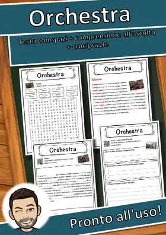
Orchestra – Scheda: testo con spazi vuoti, comprensione all'ascolto e crucipuzzle
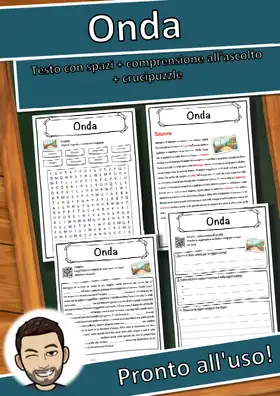
Onda – Scheda: testo con spazi vuoti, comprensione all'ascolto e crucipuzzle
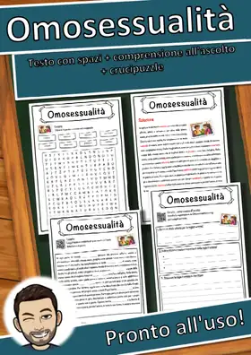
Omosessualità – Scheda: testo con spazi vuoti, comprensione all'ascolto e crucipuzzle
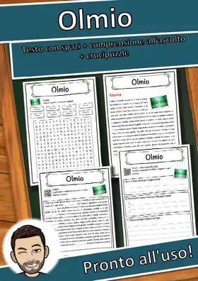
Olmio – Scheda: testo con spazi vuoti, comprensione all'ascolto e crucipuzzle
Oasi – Scheda: testo con spazi vuoti, comprensione all'ascolto e crucipuzzle
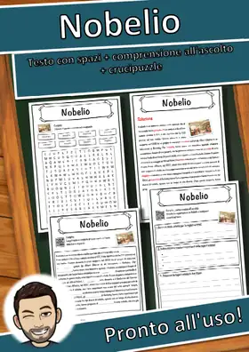
Nobelio – Scheda: testo con spazi vuoti, comprensione all'ascolto e crucipuzzle
Nichel – Scheda: testo con spazi vuoti, comprensione all'ascolto e crucipuzzle
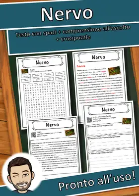
Nervo – Scheda: testo con spazi vuoti, comprensione all'ascolto e crucipuzzle
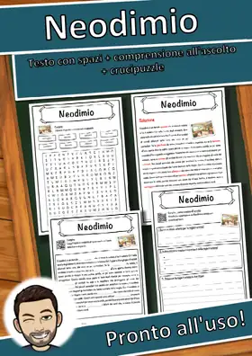
Neodimio – Scheda: testo con spazi vuoti, comprensione all'ascolto e crucipuzzle
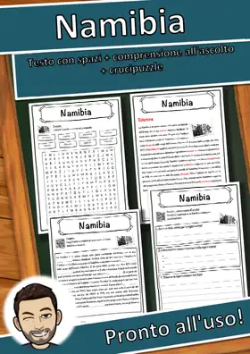
Namibia – Scheda: testo con spazi vuoti, comprensione all'ascolto e crucipuzzle
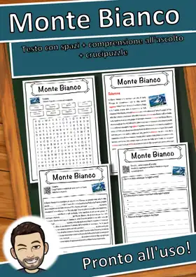
Monte Bianco – Scheda: testo con spazi vuoti, comprensione all'ascolto e crucipuzzle
Modellismo ferroviario – Scheda: testo con spazi vuoti, comprensione all'ascolto e crucipuzzle
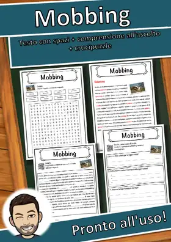
Mobbing – Scheda: testo con spazi vuoti, comprensione all'ascolto e crucipuzzle
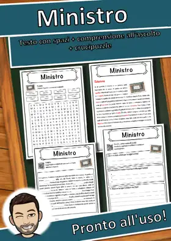
Ministro – Scheda: testo con spazi vuoti, comprensione all'ascolto e crucipuzzle
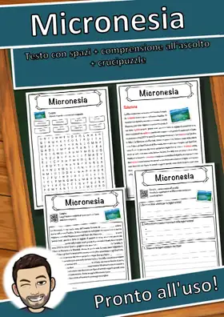
Micronesia – Scheda: testo con spazi vuoti, comprensione all'ascolto e crucipuzzle
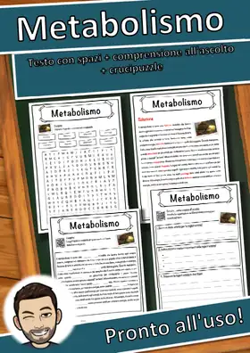
Metabolismo – Scheda: testo con spazi vuoti, comprensione all'ascolto e crucipuzzle
Mestruazione – Scheda: testo con spazi vuoti, comprensione all'ascolto e crucipuzzle
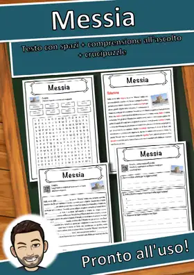
Messia – Scheda: testo con spazi vuoti, comprensione all'ascolto e crucipuzzle
Mercante – Scheda: testo con spazi vuoti, comprensione all'ascolto e crucipuzzle
Meitnerio – Scheda: testo con spazi vuoti, comprensione all'ascolto e crucipuzzle
Materie prime – Scheda: testo con spazi vuoti, comprensione all'ascolto e crucipuzzle
Martino di Tours – Scheda: testo con spazi vuoti, comprensione all'ascolto e crucipuzzle
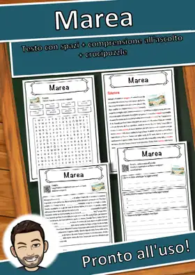
Marea – Scheda: testo con spazi vuoti, comprensione all'ascolto e crucipuzzle
Mar del Giappone – Scheda: testo con spazi vuoti, comprensione all'ascolto e crucipuzzle
Mar Caspio – Scheda: testo con spazi vuoti, comprensione all'ascolto e crucipuzzle
Madagascar – Scheda: testo con spazi vuoti, comprensione all'ascolto e crucipuzzle
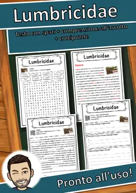
Lumbricidae – Scheda: testo con spazi vuoti, comprensione all'ascolto e crucipuzzle
Lingue basso-tedesche – Scheda: testo con spazi vuoti, comprensione all'ascolto e crucipuzzle
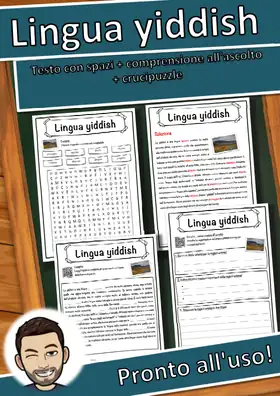
Lingua yiddish – Scheda: testo con spazi vuoti, comprensione all'ascolto e crucipuzzle
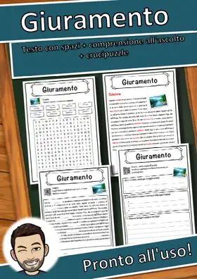
Giuramento – Scheda: testo con spazi vuoti, comprensione all'ascolto e crucipuzzle
Giovanni Calvino – Scheda: testo con spazi vuoti, comprensione all'ascolto e crucipuzzle
Giorno della Riforma – Scheda: testo con spazi vuoti, comprensione all'ascolto e crucipuzzle
Giornalista – Scheda: testo con spazi vuoti, comprensione all'ascolto e crucipuzzle
Gioielleria – Scheda: testo con spazi vuoti, comprensione all'ascolto e crucipuzzle
Gioco di società – Scheda: testo con spazi vuoti, comprensione all'ascolto e crucipuzzle
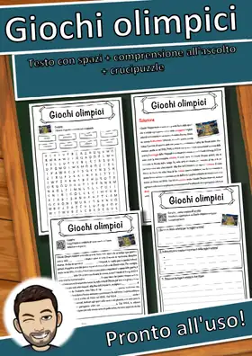
Giochi olimpici – Scheda: testo con spazi vuoti, comprensione all'ascolto e crucipuzzle
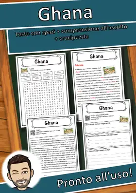
Ghana – Scheda: testo con spazi vuoti, comprensione all'ascolto e crucipuzzle
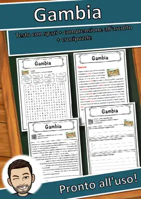
Gambia – Scheda: testo con spazi vuoti, comprensione all'ascolto e crucipuzzle
Gallia – Scheda: testo con spazi vuoti, comprensione all'ascolto e crucipuzzle

Pianta carnivora – Scheda: testo con spazi vuoti, comprensione all'ascolto e crucipuzzle
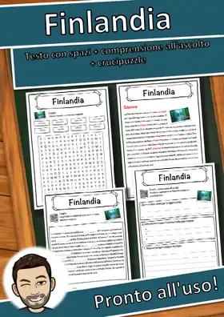
Finlandia – Scheda: testo con spazi vuoti, comprensione all'ascolto e crucipuzzle
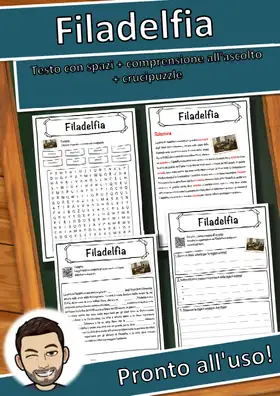
Filadelfia – Scheda: testo con spazi vuoti, comprensione all'ascolto e crucipuzzle
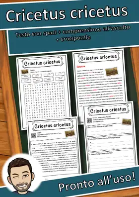
Cricetus cricetus – Scheda: testo con spazi vuoti, comprensione all'ascolto e crucipuzzle
Fata – Scheda: testo con spazi vuoti, comprensione all'ascolto e crucipuzzle
Everest – Scheda: testo con spazi vuoti, comprensione all'ascolto e crucipuzzle

Eternità – Scheda: testo con spazi vuoti, comprensione all'ascolto e crucipuzzle

Essere umano – Scheda: testo con spazi vuoti, comprensione all'ascolto e crucipuzzle

Esperto – Scheda: testo con spazi vuoti, comprensione all'ascolto e crucipuzzle
Nessun materiale trovato: prova con un'altra parola o un altro filtro.